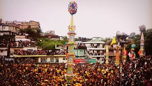

Festivals and Ceremonies of the "Jaintias"
1.Behdeinkhlam
"It is the most important festival in the socio-economic life of the Jaintias and the focus is on praying for the property and good health of the people and on invoking divine blessings for a bountiful harvest.
Behdienkhlam is celebrated all over the Jaintia district, but the grand spectacle takes place at Jowai, the district headquarters, at an altitude of 1220 metres from sea-level and only 64 km. away from Shillong by road. The festival is observed by non-Christian 'Pnars' who believe in the traditional faith of "Niamtre".
Legend has it that Jowai town.
The Festival
A week before the festival begins, a pig is sacrificed to "Thunder" (Knia Pyrthat). The "Wasan" or priests ring "Chew Chew", a brass bell, along the main road of the town till the forest begins. The main feature of the festival is the making of the "Dein Khlam", "Symlend" and "Khnong", which are rounded, polished and tall trunks of trees, felled in a preserved forest. Pine trees are never used. After letting them lie in the woods for a couple of nights, the trunks are brought to the town with great fanfare - drums and pipes play, there is also much dancing and yelling. Later these trunks are erected in each locality and even in front of individual homes. On the fourth day, young men led by priests carry bamboo sticks and visit each home, where the roof is beaten to chase away evil spirits to the accompaniment of drums, cymbals and chanting in Pnar. The erected "Khnong" is pulled down, broken and discarded. The group is offered home-brewed rice beer by the lady of the house. The youth of each locality also try out their artistic skills by erecting gaily coloured "rots" - 30-40 feet tall structures built of bamboo, coloured paper and tinsel. Competition flares as each group tries to outdo the other in making the tallest and most artistic rot. In the afternoon of the fourth day, "rots" are carried in procession towards the "aitnar"site. The river is dammed and a low brick wall erected to form a kind of amphitheatre. Spectators begin to arrive-the women dressed gorgeously in colourful silk "Usens"and adorned with gold ornaments. If it begins to drizzle, colourful umbrellas open, adding to the bloom. After the "rots" have arrived,the polished, rounded logs are thrown into the river where they float and all the dancing men and boys rush towards them and try to balance on the rolling, shifting, slippery logs. A lot of horseplay and intoxicated frolicking accompanies this festival. At the end of the festival, football games are played with a wooden ball."2.The "Laho" Dance
 "This is a festival devoted to entertainment. Both men and women participate in the dancing, always dressed in their colourful best. Usually two young men on either side of a girl, linking arms together, dance in step. In place of the usual drum and pipe, a "cheer leader", a man with the gift of rhythmic recitation, tells ribald couplets, and spectators roll with laughter "
"This is a festival devoted to entertainment. Both men and women participate in the dancing, always dressed in their colourful best. Usually two young men on either side of a girl, linking arms together, dance in step. In place of the usual drum and pipe, a "cheer leader", a man with the gift of rhythmic recitation, tells ribald couplets, and spectators roll with laughter "
3.Sowing Ritual Ceremony
Beh Ser Soopen
A religious hunting ritual. A priest breaks an egg in order to bring success and to know which divine part of the forest the hunters must go. At the end of the chase, the "quarry" is carried to the altar and the meat distributed among all.
Cher iung blai
Men make a small thatch of bamboo and grass - it is a place where evil spirits are locked up. The male members then come with spears and make a symbolic killing of the demons.